Mask Shape Clean-up
Masks produced by thresholding, saliency or foreground extraction are rarely clean: objects have holes, noise leaves isolated pixels, score bars and walls touch the border. These operators repair masks before they reach the blob, locator or zoom libraries, and turn masks into distance maps.
| Getter | Bundles |
|---|---|
get_extension_maskshape_binaryimg() | bundle_image2DBinary_maskshape_factory (binary output) |
get_extension_maskshape_intensityimg() | bundle_image2DIntensity_maskshape_factory (distance maps, intensity output) |
Signatures follow the blob-extraction convention: (mask) and (mask, p) for a binary mask; (saliency), (saliency, threshold) and (saliency, threshold, p) for an intensity map. p is the operator's parameter in [0, 1]. Objects are 8-connected; background regions are 4-connected, so a hole touching the outside only diagonally stays a hole.
Example mask
80×120, shown at 2×: a ring, a "cell" with three 2×2 holes, a C, a thick cross, a thin diagonal, a score bar and a wall touching the border, and 30 isolated noise pixels.

Every binary operator, default parameter
| Operator | Result | What it does |
|---|---|---|
shape_fill_holes | 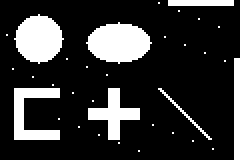 | fills every enclosed background region (the ring and the cell become solid) |
shape_holes | 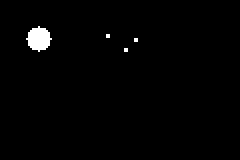 | only the holes: what fill_holes adds |
shape_convex_hull | 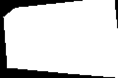 | one convex polygon around the whole foreground |
shape_convex_hull_objects | 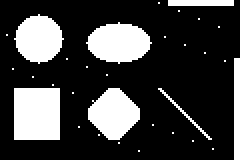 | convex hull of each object separately (the C closes, the cross becomes a diamond) |
shape_bbox_fill | 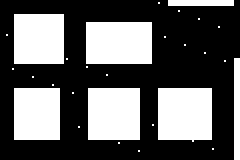 | each object replaced by its filled bounding box |
shape_skeleton | 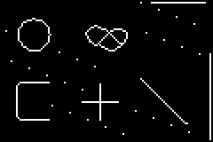 | one-pixel-wide medial lines (Guo-Hall thinning) |
shape_boundary | 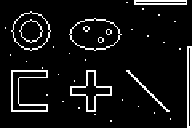 | object pixels touching the background or the image edge |
shape_remove_small |  | drops objects under 0.1% of the image (the noise) |
shape_remove_large | drops objects over 10% of the image (none here) | |
shape_clear_border | 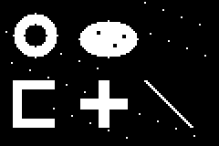 | drops objects touching the border (score bar, wall, edge noise) |
shape_keep_border | keeps only objects touching the border | |
shape_majority | 3×3 majority vote: isolated pixels vanish, one-pixel gaps close |
Effect of p
shape_fill_holes(mask, p) fills only holes of at most p of the image's pixels (p = 1, the default, fills all of them):
p = 1 (all holes) | p = 0.001 (≤ 9 px: the cell's holes, not the ring's) |
|---|---|
 |
shape_remove_small(mask, p) drops objects smaller than p of the image:
p = 0.0002 (< 2 px) | p = 0.003 (< 29 px) | p = 0.02 (< 192 px) |
|---|---|---|
 | 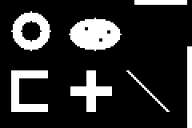 | 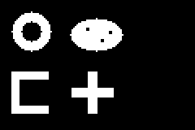 |
shape_remove_large(mask, p) drops objects larger than p:
p = 0.005 (> 48 px) | p = 0.02 (> 192 px) |
|---|---|
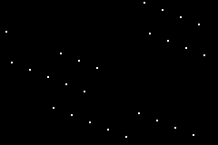 | 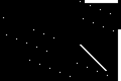 |
Distance maps
bundle_image2DIntensity_maskshape_factory returns intensity images:
Input (fill_holes ∘ remove_small) | shape_distance_inside | shape_proximity |
|---|---|---|
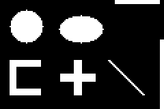 | 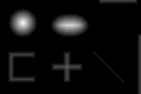 | 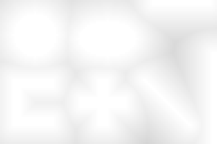 |
shape_distance_inside is the distance from each object pixel to the background, divided by its maximum: thick parts are bright and the brightest ridge is the skeleton. shape_proximity is 1 on objects and fades with the distance to the nearest object (1 − d / diagonal): a smooth "how close am I to something" map that region_* or the locators can read.
On a real mask
Lena's Itti-Koch saliency thresholded at 0.5 gives a ragged mask; a short chain of clean-up operators turns it into a few solid regions.
| Saliency | shape_majority(saliency, 0.45) | shape_remove_small(·, 0.002) | shape_fill_holes(·) | shape_convex_hull_objects(·) |
|---|---|---|---|---|
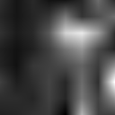 |  |  |
Bundles
UTCGP.image2D_mask_shape — Module
Mask shape clean-up: fill holes, convex hulls, skeletons, boundaries, size and border filters, and distance maps.
Bundles
- bundleimage2DBinarymaskshape_factory
- bundleimage2DIntensitymaskshape_factory
The exhaustive operator list is on the Bundle Catalogue page.
How this file is organised
Every operator is a destination-first kernel kernel!(destination, fg, p). Binary kernels write into the output storage; distance kernels use reusable Float64 working storage before the final pixel conversion. _shape_factory specialises it on an output image type: it turns the input (a mask, or a saliency map and a threshold) into fg, sanitises p, calls the kernel and returns the output image. Kernels without a parameter ignore p.
Example
using UTCGP, ImageCore
m = falses(9, 9); m[2:8, 2:8] .= true; m[5, 5] = false # a square with a one-pixel hole
mask = SImageND(BinaryPixel.(m))
B = typeof(mask)
fill = bundle_image2DBinary_maskshape_factory[:shape_fill_holes].fn(B)
fill(mask) # the square without its hole
holes = bundle_image2DBinary_maskshape_factory[:shape_holes].fn(B)
holes(mask) # only pixel (5, 5) is setUTCGP.image2D_mask_shape.bundle_image2DBinary_maskshape_factory — Constant
bundle_image2DBinary_maskshape_factoryMask clean-up operators returning a same-size binary mask.
shape_fill_holes[ (p)]: fill enclosed background; withp, only holes of at mostpof the image's pixels.shape_holesreturns the holes alone.shape_convex_hull,shape_convex_hull_objects: convex hull of the whole foreground, or of each object separately.shape_bbox_fill: replace each object by its filled bounding box.shape_skeleton: one-pixel-wide medial lines (Guo-Hall thinning).shape_boundary: object pixels touching the background or the image border.shape_remove_small(p),shape_remove_large(p): drop objects smaller or larger thanpof the image (defaults0.001and0.1).shape_clear_border,shape_keep_border: drop, or keep only, objects touching the image border (scores, HUDs, walls).shape_majority: 3×3 majority vote, removing isolated pixels and filling single-pixel gaps.
Signatures follow the blob-extraction convention: (mask) and (mask, p) for a binary mask; (saliency), (saliency, threshold) and (saliency, threshold, p) for an intensity map thresholded at threshold (default 0.5). p is the operator's parameter, clamped to [0, 1]. Objects are 8-connected and background regions 4-connected, so a diagonal gap never lets a hole leak out.
UTCGP.image2D_mask_shape.bundle_image2DIntensity_maskshape_factory — Constant
bundle_image2DIntensity_maskshape_factoryDistance maps of a mask, returned as a same-size intensity image in [0, 1].
shape_distance_inside: distance from each object pixel to the nearest background pixel, divided by the largest such distance (thick parts are bright; ridges indicate thick regions but are not the thinning skeleton). Empty masks return zeros; full masks return ones (no background sample).shape_proximity:1 − d / diagonalwithdthe distance to the nearest object pixel:1on objects, fading with distance.
Signatures follow the blob-extraction convention: (mask) and (mask, p) for a binary mask; (saliency), (saliency, threshold) and (saliency, threshold, p) for an intensity map thresholded at threshold (default 0.5). p is the operator's parameter, clamped to [0, 1]. Objects are 8-connected and background regions 4-connected, so a diagonal gap never lets a hole leak out.
Timings for the examples
Measured during this documentation build. See Timing methodology for measurement limits and input cases that can make operators expensive.
Julia 1.13.2; znver3; 1 Julia thread(s); optimisation level 2.
Times are warmed wall-clock measurements of the actual calls above, including invokelatest and allocations. Loading, factory generation and image rendering are excluded. CPU load and garbage collection affect these values. The maximum is the slowest observed sample, not a worst-case bound.
| Input | Dimensions | Pixel storage |
|---|---|---|
| image #1 | 80×120 | BinaryPixel{Bool} |
| image #2 | 80×120 | BinaryPixel{Bool} |
| image #3 | 80×120 | BinaryPixel{Bool} |
| image #4 | 128×128 | IntensityPixel{FixedPointNumbers.N0f16} |
| image #5 | 128×128 | IntensityPixel{FixedPointNumbers.N0f16} |
| image #6 | 128×128 | BinaryPixel{Bool} |
| image #7 | 128×128 | BinaryPixel{Bool} |
| image #8 | 128×128 | BinaryPixel{Bool} |
Numeric-only plot calls of the same operator and arity are grouped: argument ranges cover the sampled values, the median is the median of the per-case medians, and the maximum covers every observed sample. Image calls keep a row for each input/parameter combination.
| Operator | Inputs | Output | Median (µs) | Observed max (µs) | Allocated bytes (median) | Cases / samples |
|---|---|---|---|---|---|---|
shape_fill_holes | image #1 | 80×120, BinaryPixel{Bool} | 17.1 | 46.75 | 9704 | 1 / 3 |
shape_holes | image #1 | 80×120, BinaryPixel{Bool} | 17.33 | 50.74 | 9704 | 1 / 3 |
shape_convex_hull | image #1 | 80×120, BinaryPixel{Bool} | 24.68 | 66.15 | 9704 | 1 / 3 |
shape_convex_hull_objects | image #1 | 80×120, BinaryPixel{Bool} | 43.44 | 70.38 | 12904 | 1 / 3 |
shape_bbox_fill | image #1 | 80×120, BinaryPixel{Bool} | 22.65 | 58.48 | 12904 | 1 / 3 |
shape_skeleton | image #1 | 80×120, BinaryPixel{Bool} | 217.3 | 251.57 | 9704 | 1 / 3 |
shape_boundary | image #1 | 80×120, BinaryPixel{Bool} | 10.24 | 25.17 | 9704 | 1 / 3 |
shape_remove_small | image #1 | 80×120, BinaryPixel{Bool} | 28.55 | 51.85 | 12904 | 1 / 3 |
shape_remove_large | image #1 | 80×120, BinaryPixel{Bool} | 30.03 | 54.29 | 12904 | 1 / 3 |
shape_clear_border | image #1 | 80×120, BinaryPixel{Bool} | 29.81 | 53.59 | 12904 | 1 / 3 |
shape_keep_border | image #1 | 80×120, BinaryPixel{Bool} | 28.92 | 53.81 | 12904 | 1 / 3 |
shape_majority | image #1 | 80×120, BinaryPixel{Bool} | 10.17 | 31.09 | 9704 | 1 / 3 |
shape_fill_holes | image #1; 1.0 | 80×120, BinaryPixel{Bool} | 18.46 | 65.38 | 9768 | 1 / 3 |
shape_fill_holes | image #1; 0.001 | 80×120, BinaryPixel{Bool} | 31.09 | 34.99 | 10728 | 1 / 3 |
shape_remove_small | image #1; 0.0002 | 80×120, BinaryPixel{Bool} | 27.12 | 35.36 | 12968 | 1 / 3 |
shape_remove_small | image #1; 0.003 | 80×120, BinaryPixel{Bool} | 25.7 | 28.67 | 12968 | 1 / 3 |
shape_remove_small | image #1; 0.02 | 80×120, BinaryPixel{Bool} | 24.12 | 27.35 | 12968 | 1 / 3 |
shape_remove_large | image #1; 0.005 | 80×120, BinaryPixel{Bool} | 27.09 | 40.4 | 12968 | 1 / 3 |
shape_remove_large | image #1; 0.02 | 80×120, BinaryPixel{Bool} | 26.82 | 28.57 | 12968 | 1 / 3 |
shape_fill_holes | image #2 | 80×120, BinaryPixel{Bool} | 13.58 | 15.74 | 9752 | 1 / 3 |
shape_distance_inside | image #3 | 80×120, IntensityPixel{FixedPointNumbers.N0f8} | 103.45 | 177.71 | 9704 | 1 / 3 |
shape_proximity | image #3 | 80×120, IntensityPixel{FixedPointNumbers.N0f8} | 162.7 | 205.54 | 9704 | 1 / 3 |
itti_koch_saliency_image2D | image #4 | 128×128, IntensityPixel{FixedPointNumbers.N0f16} | 3864.51 | 3952.44 | 1974120 | 1 / 3 |
shape_majority_image2D_factory | SImage2D{128, 128, BinaryPixel{Bool}, Matrix{BinaryPixel{Bool}}} | UTCGP.image2Dmaskshape.var"#shapemajorityUTCGP.SImageND{Tuple{Int64(0000000000000000000000000000000000000000000000000000000010000000),Int64(0000000000000000000000000000000000000000000000000000000010000000)},UTCGP.BinaryPixel{Bool},Int64(0000000000000000000000000000000000000000000000000000000000000010),Array{UTCGP.BinaryPixel{Bool},Int64(0000000000000000000000000000000000000000000000000000000000000010)}}" | 12.18 | 63.67 | 9120 | 1 / 3 |
shape_majority | image #5; 0.45 | 128×128, BinaryPixel{Bool} | 23.72 | 51.62 | 16552 | 1 / 3 |
shape_remove_small_image2D_factory | SImage2D{128, 128, BinaryPixel{Bool}, Matrix{BinaryPixel{Bool}}} | UTCGP.image2Dmaskshape.var"#shaperemovesmall_UTCGP.SImageND{Tuple{Int64(0000000000000000000000000000000000000000000000000000000010000000),Int64(0000000000000000000000000000000000000000000000000000000010000000)},UTCGP.BinaryPixel{Bool},Int64(0000000000000000000000000000000000000000000000000000000000000010),Array{UTCGP.BinaryPixel{Bool},Int64(0000000000000000000000000000000000000000000000000000000000000010)}}" | 17.68 | 106.53 | 9168 | 1 / 3 |
shape_remove_small | image #6; 0.002 | 128×128, BinaryPixel{Bool} | 33.36 | 68.13 | 17352 | 1 / 3 |
shape_fill_holes_image2D_factory | SImage2D{128, 128, BinaryPixel{Bool}, Matrix{BinaryPixel{Bool}}} | UTCGP.image2Dmaskshape.var"#shapefillholes_UTCGP.SImageND{Tuple{Int64(0000000000000000000000000000000000000000000000000000000010000000),Int64(0000000000000000000000000000000000000000000000000000000010000000)},UTCGP.BinaryPixel{Bool},Int64(0000000000000000000000000000000000000000000000000000000000000010),Array{UTCGP.BinaryPixel{Bool},Int64(0000000000000000000000000000000000000000000000000000000000000010)}}" | 11.85 | 68.33 | 9120 | 1 / 3 |
shape_fill_holes | image #7 | 128×128, BinaryPixel{Bool} | 15.32 | 51.04 | 16536 | 1 / 3 |
shape_convex_hull_objects_image2D_factory | SImage2D{128, 128, BinaryPixel{Bool}, Matrix{BinaryPixel{Bool}}} | UTCGP.image2Dmaskshape.var"#shapeconvexhullobjectsUTCGP.SImageND{Tuple{Int64(0000000000000000000000000000000000000000000000000000000010000000),Int64(0000000000000000000000000000000000000000000000000000000010000000)},UTCGP.BinaryPixel{Bool},Int64(0000000000000000000000000000000000000000000000000000000000000010),Array{UTCGP.BinaryPixel{Bool},Int64(0000000000000000000000000000000000000000000000000000000000000010)}}" | 11.94 | 68.8 | 9168 | 1 / 3 |
shape_convex_hull_objects | image #8 | 128×128, BinaryPixel{Bool} | 55.44 | 71.87 | 17336 | 1 / 3 |